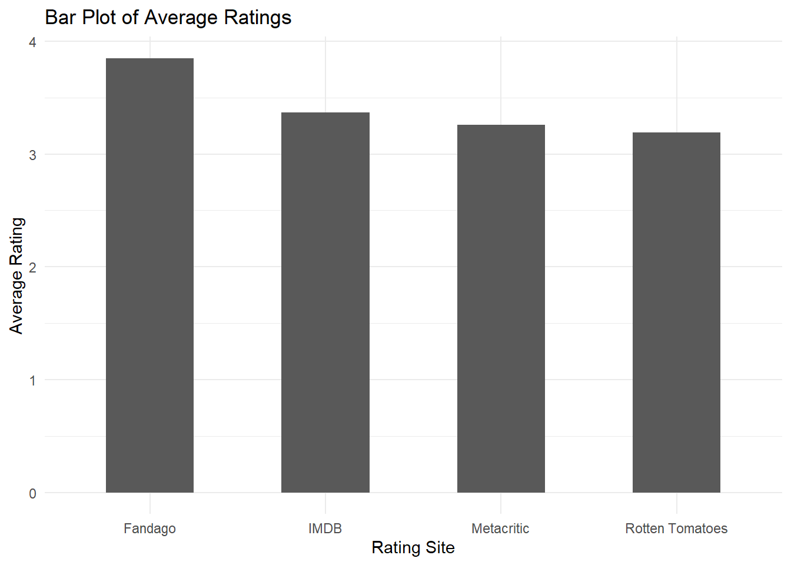
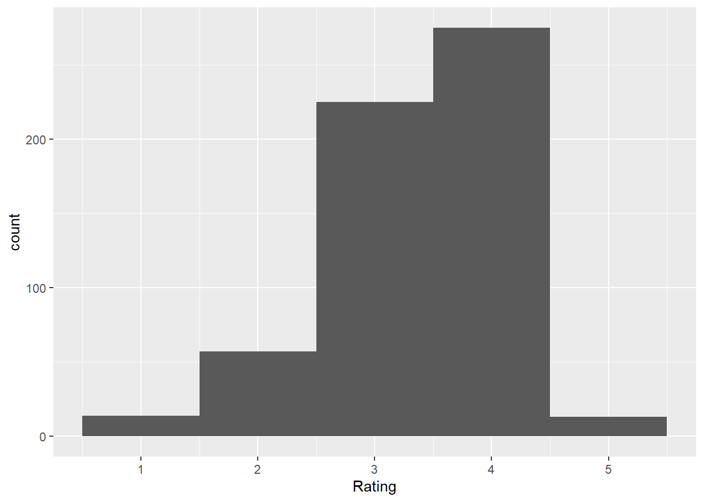
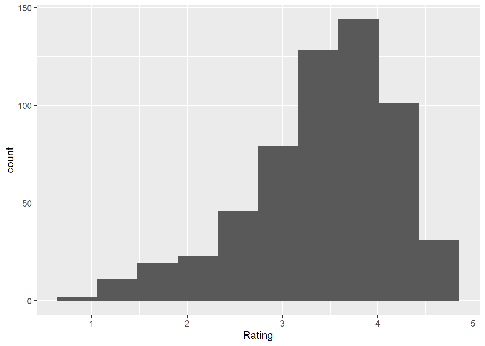
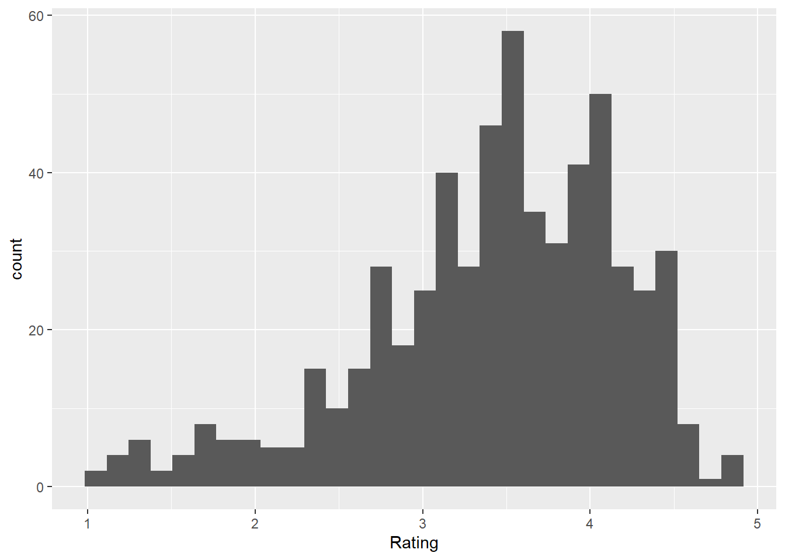
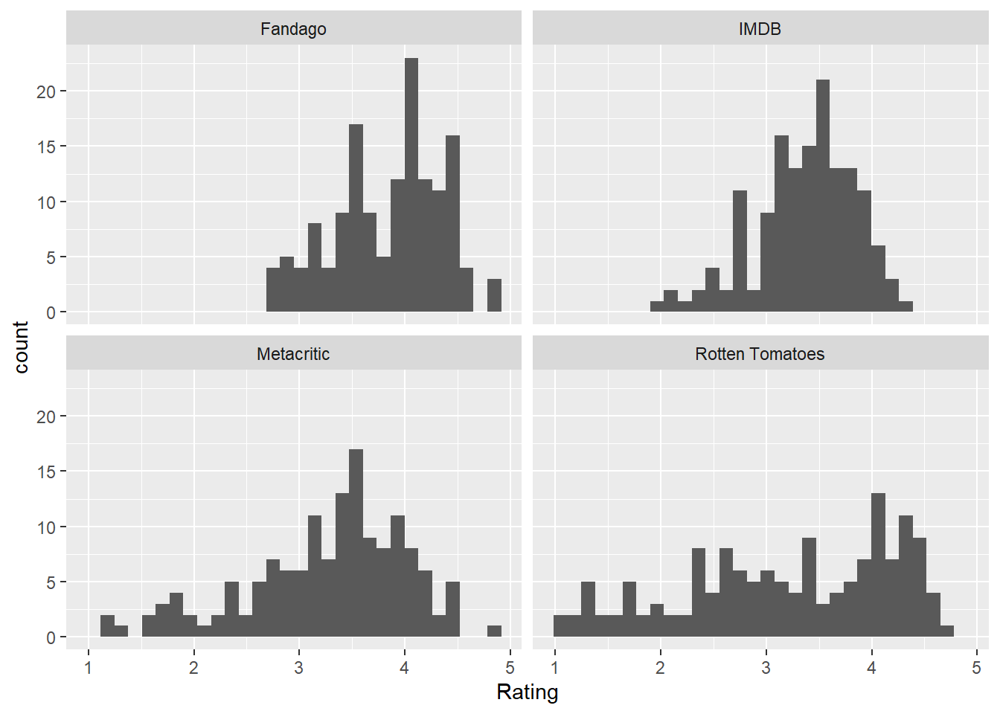
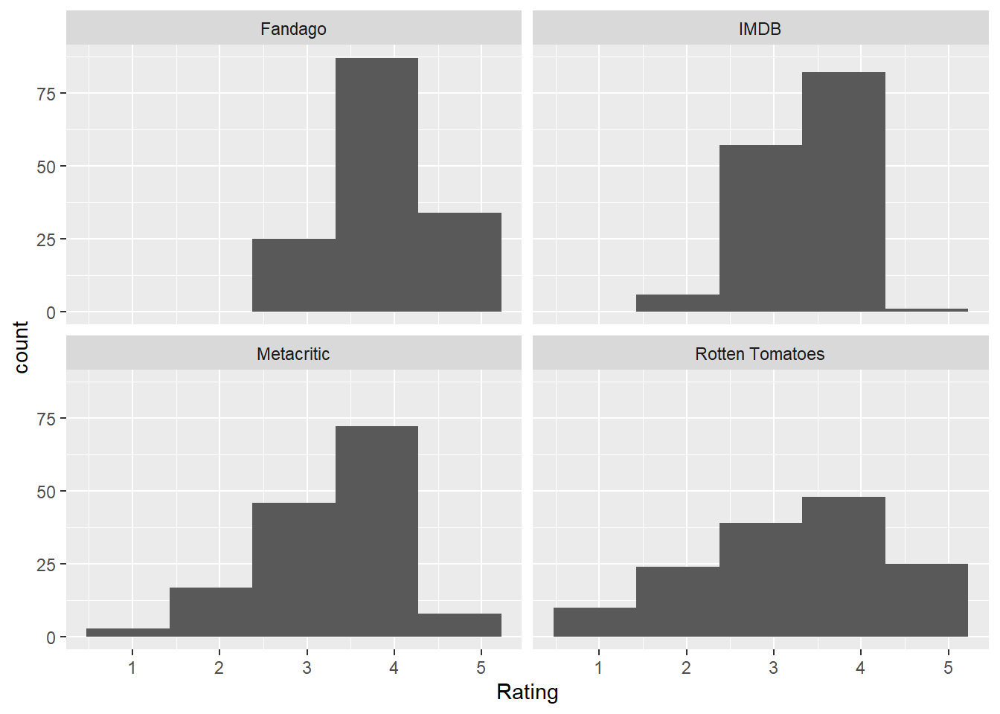
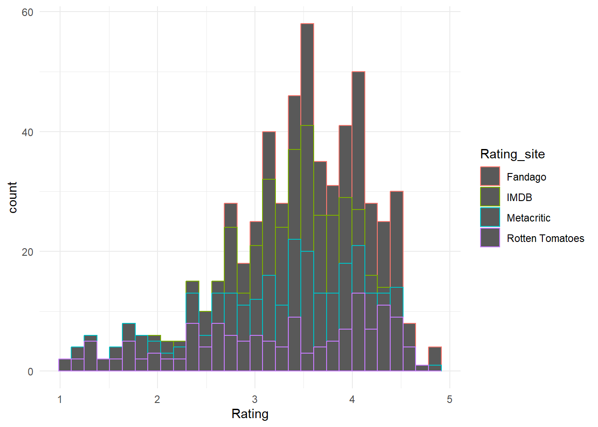
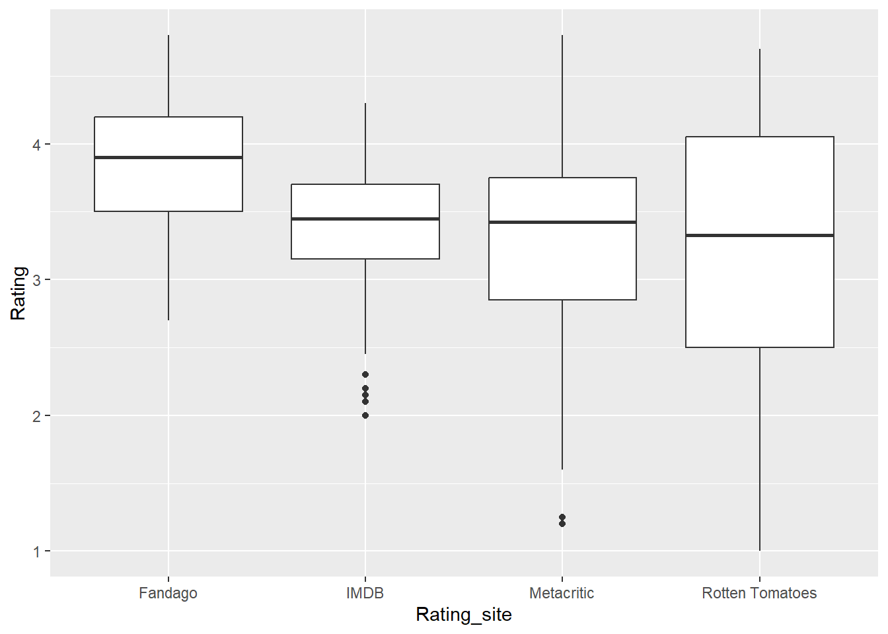
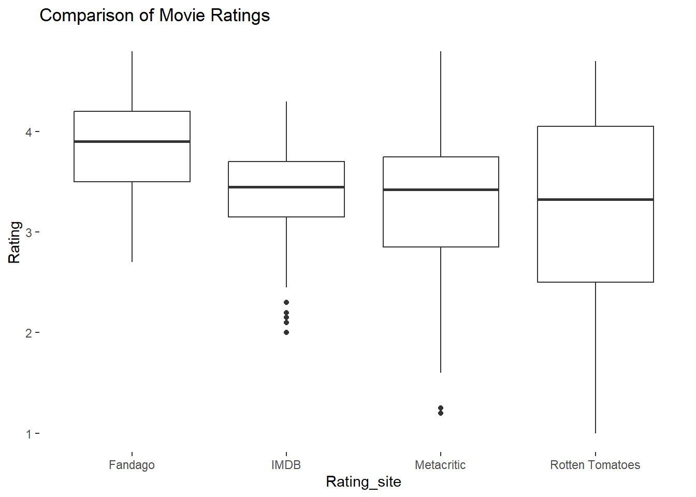

pacman::p_load(
ggplot2,
dplyr,
readr
)
movie_review <- read_csv("datasets/movie_reviews_2.csv")
#spec(movie_review)Histogram , Bar and Box Plots
Background 1/2
When Hollywood releases new movies, Metacritic, Fandango, Rotten Tomatoes, and IMDB use different systems to calculate ratings based on the reviews by movie critics and consumers.
Which of these sites should you consult when deciding whether to see a movie?
Understanding how the different sites’ movie reviews compare to one another is a good start
Fandango has been suspected of releasing inflated ratings to increase ticket sales.
After they found that some films that garnered poor ratings elsewhere were rated highly on Fandango, analysts from FiveThirtyEight investigated and published an article about bias in movie ratings.
Background 2/2
To conduct the investigation, the team compiled data for 147 films from 2015 with reviews from movie critics and consumers
In this mission, you’ll use this data and ggplot2 to visualize reviews from Metacritic, Fandango, Rotten Tomatoes, and IMDB to get a sense for differences in the way the four sites compute movie ratings.
Preparing the dataset
Fandago Ratings
Fandago_Ratings <- movie_review[,c(1,8)]
kable(Fandago_Ratings[1:5,])| FILM | Fandango_Ratingvalue |
|---|---|
| Avengers: Age of Ultron (2015) | 4.5 |
| Cinderella (2015) | 4.5 |
| Ant-Man (2015) | 4.5 |
| Do You Believe? (2015) | 4.5 |
| Hot Tub Time Machine 2 (2015) | 3.0 |
Rotten Tomato Ratings
Rotten_Tomato_Ratings <- movie_review[,c(1,10)]
kable(Rotten_Tomato_Ratings[1:5,])| FILM | RT_user_norm |
|---|---|
| Avengers: Age of Ultron (2015) | 4.3 |
| Cinderella (2015) | 4.0 |
| Ant-Man (2015) | 4.5 |
| Do You Believe? (2015) | 4.2 |
| Hot Tub Time Machine 2 (2015) | 1.4 |
Metacritic Ratings
Metacritic_Ratings <- movie_review[,c(1,12)]
kable(Metacritic_Ratings[1:5,])| FILM | Metacritic_user_nom |
|---|---|
| Avengers: Age of Ultron (2015) | 3.55 |
| Cinderella (2015) | 3.75 |
| Ant-Man (2015) | 4.05 |
| Do You Believe? (2015) | 2.35 |
| Hot Tub Time Machine 2 (2015) | 1.70 |
IMDB Ratings
IMDB_Ratings <- movie_review[,c(1,13)]
kable(IMDB_Ratings[1:5,])| FILM | IMDB_norm |
|---|---|
| Avengers: Age of Ultron (2015) | 3.90 |
| Cinderella (2015) | 3.55 |
| Ant-Man (2015) | 3.90 |
| Do You Believe? (2015) | 2.70 |
| Hot Tub Time Machine 2 (2015) | 2.55 |
Creating A new Variable with the rating Site
Rotten_tomatoes <- rep(x="Rotten Tomatoes",times=146)
Rotten_Tomato_Ratings <- Rotten_Tomato_Ratings %>%
mutate(Rating_site = Rotten_tomatoes)
IMDB <- "IMDB"
IMDB_Ratings <- IMDB_Ratings %>%
mutate(Rating_site = IMDB)
Fandago <- "Fandago"
Fandago_Ratings <- Fandago_Ratings %>%
mutate(Rating_site = Fandago)
Metacritic_Ratings <- Metacritic_Ratings %>%
mutate(Rating_site = "Metacritic")Renaming to create a similar rating column
- We will combine the created datasets and hence we need to have common column names
Rotten_Tomato_Ratings <- Rotten_Tomato_Ratings %>%
rename(Rating = RT_user_norm)
IMDB_Ratings <- IMDB_Ratings %>%
rename(Rating = IMDB_norm)
Fandago_Ratings <- Fandago_Ratings %>%
rename( Rating = Fandango_Ratingvalue)
Metacritic_Ratings <- Metacritic_Ratings %>%
rename(Rating = Metacritic_user_nom )Combining to Create a new dataframe
full_join()will add the dataframes by including all rows in x or y.
First_two <- full_join(Rotten_Tomato_Ratings,IMDB_Ratings,
by = NULL , copy = FALSE )
Second_two <- full_join(Fandago_Ratings,Metacritic_Ratings,
by = NULL , copy = FALSE)
reviews <- full_join(First_two , Second_two ,
by = NULL , copy = FALSE)Saving a dataframe as csv file
- A dataframe can be saved as a csv file as given in the code below using
write.csv()function
#write.csv(reviews, file = "datasets/reviews.csv")Comparing Averages Among Rating Sites
Let’s start by getting a sense for how reviews reported by the four sites compare.
You can approach this problem by calculating the average ratings for each rating site.
To do this, group the reviews data frame into one group for each value of Rating_Site and calculate the average of Rating for each group - “Split Apply Combine”
Task
Calculate the average rating for each review site
1. Use `group_by()` to group the reviews data frame by Rating_Site. 2. Use `summarize()` to calculate the average Rating for each Rating_Site
Solution
review_avgs <- reviews %>%
group_by(Rating_site) %>%
summarize(Average = round(mean(Rating),2))
kable(review_avgs)| Rating_site | Average |
|---|---|
| Fandago | 3.85 |
| IMDB | 3.37 |
| Metacritic | 3.26 |
| Rotten Tomatoes | 3.19 |
Visualizing Differences Among Groups Using Bar Charts
Bar charts represent grouped data summeries using bars with heights proportional to values of a summary variable such as the average.
The syntax is similar to that of line plots, ggplots are built layer by layer
Instead
geom_line(),geom_baris used to generate bar plots
plot1 <- ggplot(data = review_avgs) +
aes(x = Rating_site, y = Average) +
geom_bar(stat = "identity", width = 0.5) +
labs(title = "Bar Plot of Average Ratings",
y = "Average Rating", x = "Rating Site") +
theme_minimal()Plot Display
plot1
stat = “identity” role
In plot 1 code, we specify stat = “identity” within the
geom_bar()layer.This is because, by default, using
geom_bar()creates a bar graph where the height of the bars corresponds to the number of values in the specified y-variable.Using stat = “identity” overrides the default behavior and creates bars equal to the value of the y-variable,the average.
Using Histograms to Understand Distributions 1/2
As you look at plot 1, you can clearly see that Fandango has a higher average movie rating than the other three sites.
Does this mean Fandango tends to give higher ratings?
As you consider that question, let’s think about what the bar chart does not show us.
It makes sense to wonder if Fandango’s average movie rating is higher than those of the other sites because it tends to give all movies good ratings, or because it gave some movies average ratings and a small number of movies excellent ratings.
However, the bar graph does not provide this information.
Using Histograms to Understand Distributions 2/2
The average of a set of numbers does not tell us anyting about the spread of the numbers that were used to calculate the average.
For example, the values of these two variables both have an average of 5:
Variable 1: 5 5 5 5 5 4 5 5 6 5Variable 2: 20 9 1 2 8 4 9 5 7
However, while values of Variable 1 are distributed between 4 and 6, values of Variable 2 are distributed between 1 and 20.
The values of Variable 2 are much more spread out than those of Variable 1.
Histograms
Histograms can address the weakness of barplots
Histograms are used to understand characteristics of one variable rather than the relationship between two variables
Histograms depict the frequency with which values of a variable occur, otherwise known as the distribution of the variable.
Histograms x and y
The x axis is an aggregate of variables which are binned together to form class intervals
On the y-axis is a variable that is calculated automatically when you create the histogram: count.
The count variable represents the number of values of the x variable that fall into each of the categories on the x-axis.
plot2 <- ggplot(data = reviews) +
aes(x = Rating) +
geom_histogram(binwidth = 1)Histogram with binwidth of 1
plot2
Histogram with 10 bins
ggplot(data = reviews) +
aes(x = Rating) +
geom_histogram(bins = 10)
Histogram Code
Within the
aes()layer, you only need to specify the independent variable.The
geom_histogram()layer specifies creation of a histogram to represent the independent variable.Within the
geom_histogram()layer, you can use two different arguments to specify the number of categories for binning the independent variable.
binwidth = allows you to specify the size of the bins, and is useful for instances, such as this example, where you want categories to span specific intervals.
bins = allows you to specify the number of bins, which can be useful to experiment with when deciding how much detail you want to use to display your data.
Task
1.Create a histogram to show the distribution of all values of the Rating variable in the reviews data frame. 2. Specify 30 bins to categorize values of the independent variable
plot3 <- ggplot(data = reviews) +
aes(x = Rating) +
geom_histogram(bins = 30)Solution : Plot Display
plot3
Comparing Multiple Variables : Faceted plots
From the histogram you created, you can see that increasing the number of bins produces a visualization of the data with greater detail:
Histograms allow you to visualize the shape of a distribution — where values of the data are clustered.
Most values of Rating are clustered between 3.5 and 4.5.
This histogram tells us about the distribution of all values of the Rating variable, but what we really want to investigate is how ratings for different rating sites differ.
A faceted plot will do.
Task
Add a layer to the histogram you created on the last screen to create a faceted graph containing four histograms of the distribution of Rating for each site:
- Rotten Tomatoes
- IMDB
- Metacritic
- Fandango
Solution 1: Using 30 bins
plot4 <- ggplot(data = reviews) +
aes(x = Rating) +
geom_histogram(bins = 30) +
facet_wrap(~Rating_site, nrow= 2)Plot Display
plot4
Solution 2 : Using 5 bins
plot5 <- ggplot(data = reviews) +
aes(x = Rating) +
geom_histogram(bins = 5) +
facet_wrap(~Rating_site, nrow= 2)Plot Display
plot5
Explanations
The four histograms in your faceted plot show differences in the distributions for each rating site:
The distributions of Rating for Rotten Tomatoes and Metacritic indicate that those two sites are more likely to give movies poor ratings than Fandango or IMDB, which have most values of Rating clustered over 3.
Comparing these distributions suggests some sites give poor ratings more often than others.
For example, the difference between the distributions of Ratings for Fandango and Rotten Tomatoes is very clear
However, Fandango and IMDB have distributions that look similar. Is there a better way to visualize differences between them?
Comparing Distributions Using Aesthetics
- As for line graphs, values associated with different variables can be distinguished by mapping them to different colors within the
aes()layer:
plot6 <- ggplot(data = reviews) +
aes(x = Rating, color = Rating_site) +
geom_histogram(bins = 30) +
theme_minimal()Plot Display
plot6
Using fill
n plot6, the number of values of Rating for each value of Rating_Site are indicated by bars outlined by different colors.
Another option for using aesthetics to map values of Rating to different values of Rating_Site is to use the argument fill = instead of color =.
Instead of outlines, fill = depicts bars filled in with different colors.
Task
- Create a histogram depicting the distribution of Ratings for each site using bars filled with different colors.
Solution
plot7 <- ggplot(data = reviews) +
aes(x = Rating, fill= Rating_site) +
geom_histogram(bins = 30)Plot Display
plot7
Visualizing Averages And Variations
Box plots are used to visualize the center of data and distribution
Like bar graphs, box plots provide a summary of data by group.
Like histograms, they provide information about how data are spread
Groups are indicated on the x-axis since they are the independent variable.
Dependent variable is on the y-axis.
Creating a Boxplot
- To create a box plot using ggplot2, the syntax for creating the data layer and mapping data to x and y variables is familiar
ggplot(data = reviews) + aes(x = Rating_site, y = Rating)
- Add a
geom_boxplot()layer to specify creation of a box plot.
Task
- Create a box plot to visualize summaries of values of the Rating variable for each value of Rating_Site.
Solution
ggplot(data = reviews) +
aes(x = Rating_site, y = Rating) +
geom_boxplot()
Anatomy of Boxplot 1/3
In general, you can see that the box representing Fandango ratings is higher up on the y-axis than those for the other sites.
You can also see the Rotten Tomatoes ratings appear to be more spread out, which is consistent with what you saw when we plotted the data using histograms.
While you’ve been able to glean some information from this box plot, let’s dig deeper into the individual components to fully understand all they can tell us about data.
Box plots present what is known to statisticians as a five-number summary.
Anatomy of Boxplot 2/3
The Five Number Summary
The largest value(Max): Represented by the top of the black line extending from the top of the box. These lines are also known as “whiskers”.
The third quartile (Q3): Represented by the top of the box. Seventy-five percent of the values are smaller than the third quartile.
3.The median: Represented by the thick black line. The median is the value that falls in the middle of the data.
4.The first quartile (Q1): Represented by the bottom of the box. Twenty-five percent of the values are smaller than the first quartile.
5.The smallest value(Min): Represented by the bottom of the black line extending from the bottom of the box.
Anatomy of Boxplot 3/3
Intequartile Range
The white box, bounded by Q3 and Q1, is referred to as the Interquartile Range or IQR.
The IQR encompasses 50 percent of the data, and is calculated by subtracting Q1 from Q3.
Anatomy of Boxplot 4/4 - Outliers
In the box plot you created, notice there are some points that fall below the bottom of the black lines that represent the smallest values.
These points are referred to as outliers because they are outside the range of what would be expected based on the rest of the data.
When you make a box plot using ggplot2, data points that fall below
Q1 − 1.5 IQRor aboveQ3 + 1.5 IQRare defined as outliers.
Task
In the previous exercise, you created a box plot to visualize summaries of ratings for Fandango, IMDB, Metacritic, and Rotten Tomatoes.
Add layers to your plot so it fits the following specifications:
White panel background The plot title: “Comparison of Movie Ratings”
plot8 <- ggplot(data = reviews) +
aes(x = Rating_site, y = Rating) +
geom_boxplot() +
labs(title = "Comparison of Movie Ratings") +
theme(panel.background = element_rect(fill = "white"))Plot Display
plot8
Findings
- Values of Rating for Rotten Tomatoes are spread out, indicating they regularly give movies ratings that range from poor to excellent.
- The range of values of Rating for Fandango and IMDB are both quite narrow. Fandango’s lowest reviews are around 2.5, whle outliers indicate that IMDB has some reviews that are between 2 and 2.4.
- Fandango’s median for values of Rating is higher than the median of the other sites, indicating Fandango tends to give higher ratings.
Does the box plot you made support the idea that Fandango’s reviews are biased? Which site do you think would provide the most unbiased reviews?
Deciding on A Visualization
Bar charts may be used for showing a quick summary of your data, such as averages or counts of the number of instances of a value that occur for a given variable.
Histograms are useful for visualizing distributions of data when you want to know the shape of a distribution (in other words, where most values are clustered).
Box plots provide an informative summary of the shape, spread, and center of your data.